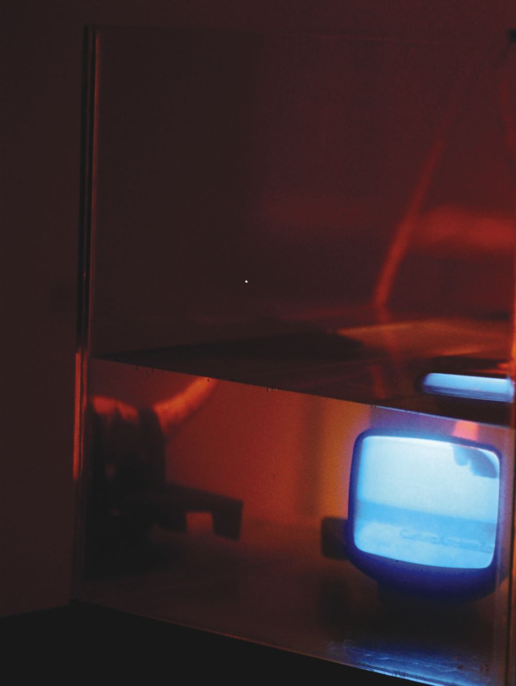
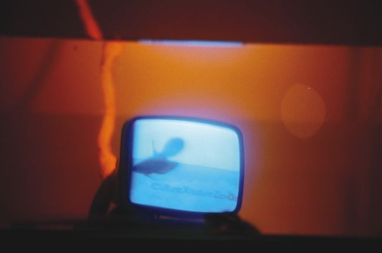

Livro · Instalações Barja · 2005
Antologia da Obra
O livro Instalações Barja reúne, pela primeira vez, os registros das instalações de Wagner Barja — uma obra altamente coesa, do profeta e a jaguatirica às armadilhas semânticas. Com textos críticos de Álvaro Faleiros, Roland de Campos, Marília Panitz, Mercedes Replinger, Bené Fonteles, Eugène Bavcar e outros.
Textos críticos
Apresentação
Pela primeira vez reunidos em livro, os registros das instalações de Wagner Barja permitem um olhar sobre uma obra altamente coesa, constituída ao longo do tempo no vórtice de questões que atravessam a arte: a palavra, a imagem, o objeto, o corpo e a cidade.
Álvaro Faleiros — do livro Instalações Barja (2005)
Do AKD-mico ao POLÊ-mico
Análise do poema-rebus AKD-Mico (1986): a charada verbal-visual em que bananas formam as letras A, K e D, ao lado de um pequeno mico vivo que completa a sequência — uma mensagem crítica dirigida ao establishment artístico. Barja, com sua verve satírica, diz aos reacionários da cultura para ‘comer bananas’. O poema liga-se à linhagem da poesia visual, com impacto e sentido pela colusão do verbal e do não verbal.
Roland de Campos — do livro Instalações Barja (2005)
Ao que Importa — Uma Resposta
Sobre o ângulo adequado para poetizar o mundo: reduzir ‘um problema intrincado a pontos simples e claros…’. Diversão e complexidade, como deve ser a vida.
Marília Panitz — do livro Instalações Barja (2005)
Linguagem do Olhar
O olho tem uma história e uma linguagem que nos fala. A obra de Barja é abordada a partir da escuta desse olhar: da luminosidade à obscuridade, do som nítido ao tom baixo — até o olho pineal que a tradição imaginou para contemplar o sol.
Mercedes Replinger González — do livro Instalações Barja (2005)
A Escuta de uma Pintura
O filósofo cego escuta a pintura de Barja: naquele dia, o sol lançava seus fogos sobre o Rio de Janeiro, e a voz de Wagner Barja contava os fatos picturais. Uma aproximação ao trabalho pela escuta e pela memória.
Eugène Bavcar — do livro Instalações Barja (2005)
Mognus Dei
Sobre a armadilha-obranome de Barja: estrategicamente posicionada no vórtice do cruzeiro, a peça está ‘pronta para mexer com a imagética’ do poder — um Barja canibal, que devora o símbolo-mito.
Bené Fonteles — do livro Instalações Barja (2005)
Documentos incertos: no lugar do monstro
O animal fantástico é uma ofensa à Criação. Em ‘São João Beuys’, Barja recorda a peça SaFG-SaUG de Beuys e associa as travessias de São João e Beuys, ambos profetas no deserto.
Mercedes Replinger González — do livro Instalações Barja (2005)
As instalações
Todas as obras do livro, em ordem da publicação, com as imagens das páginas em alta resolução.
DA2
Instalação documentada no livro Instalações Barja.
1985/86O Profeta e a Jaguatirica
Instalação documentada no livro Instalações Barja.
1986Expressosionismo
Instalação documentada no livro Instalações Barja.
1986Pega Monet, Pega Manet
Instalação documentada no livro Instalações Barja.
1986Neoconcreto (NEO)
Instalação documentada no livro Instalações Barja.
1986De Onde Vem a Escuridão
Instalação documentada no livro Instalações Barja.
1986O Casamento de Mme X com M. Duchamp
Instalação documentada no livro Instalações Barja.
1990H2O Monet
Instalação documentada no livro Instalações Barja.
1990São João Beuys
Instalação documentada no livro Instalações Barja.
1997/98Jardim de Bengalas
Instalação documentada no livro Instalações Barja.
1998Agulha no Palheiro
Instalação documentada no livro Instalações Barja.
1999/00Sol de Goethe
Instalação documentada no livro Instalações Barja.
1999/00Cegomóvel Hermógenes
Instalação documentada no livro Instalações Barja.
1999/00Medusa
Instalação documentada no livro Instalações Barja.
1999/00TV Anal
Instalação documentada no livro Instalações Barja.
1999/00Caverna
Instalação documentada no livro Instalações Barja.
1998/04Cultura x Natureza = Barbárie
Instalação documentada no livro Instalações Barja.
1985Cubo Cruz Lápide
Instalação documentada no livro Instalações Barja.
1986FIKE
Instalação documentada no livro Instalações Barja.
1986Deitado Eternamente
Instalação documentada no livro Instalações Barja.

O Profeta e a Jaguatirica
1985/86 — do livro Instalações Barja


Expressosionismo
1986 — do livro Instalações Barja


Pega Monet, Pega Manet
1986 — do livro Instalações Barja


Neoconcreto (NEO)
1986 — do livro Instalações Barja


De Onde Vem a Escuridão
1986 — do livro Instalações Barja


O Casamento de Mme X com M. Duchamp
1986 — do livro Instalações Barja


São João Beuys
1990 — do livro Instalações Barja


Jardim de Bengalas
1997/98 — do livro Instalações Barja


Sol de Goethe
1999/00 — do livro Instalações Barja


Cegomóvel Hermógenes
1999/00 — do livro Instalações Barja


Caverna
1999/00 — do livro Instalações Barja


Cultura x Natureza = Barbárie
1998/04 — do livro Instalações Barja







Cubo Cruz Lápide
1985 — do livro Instalações Barja


FIKE
1986 — do livro Instalações Barja


Deitado Eternamente
1986 — do livro Instalações Barja


Ficha técnica do livro
Organização editorial e pesquisa: Maria Gorette de O. Azevedo Barja · Digitalização e diagramação: Paulo Cesar Müller · Fotos: Gustavo Magalhães, Mila Petrillo e Gabriel Barja · Tradução: Andrea Lee Katz · Revisão: Yves Hubleto.